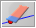
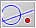
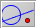

全体的な操作
ファイル操作
ファイルの操作は標準的なもので、他のソフトウェアにあるようなものとほぼ同じです。 シンデレラにより作図されたファイルは、特別のファイル形式で保存されます。 作図ファイルは
.cdyという拡張子を持ちます。- 新規作成：この操作は、何も描かれていない新しい図を作ります。
- 開く：作図ファイルを読み込みます。
- 保存：必要であればファイル名の入力をうながし、作図をファイルに保存します。
- 別名で保存：新しいファイル名を指定し、作図をファイル保存します。
出力
- HTMLへの書き出し：インタラクティブなHTMLファイルを自動的に生成します。
- (すべての図を)印刷：その時に開いているすべての描画面を印刷します。この作業にはJavaの印刷ルーチンが用いられています。そのため、この出力は「Print PDF」によるものより劣っています。あなたがPDFによるプレビューや印刷を行なうのであればこの形式が良いでしょう。
取り消し、やり直し、消去
-
 取り消し：この操作により、最後に行った動作を取り消すことができます。 次の動作が取り消し可能なものです。この操作では、続けて行った動作を好きなだけ取り消して戻ることができます。
取り消し：この操作により、最後に行った動作を取り消すことができます。 次の動作が取り消し可能なものです。この操作では、続けて行った動作を好きなだけ取り消して戻ることができます。
- 作図などの動作
- 移動
- 外観の変更
- ズーム、平行移動、回転
- 要素の消去
- やり直し：「取り消し」で取り消した作業を「やり直し」で再度やり直すことができます。続けて行った取り消し操作について好きなだけやり直すことができます。
-

消去：選択された要素のすべてと、選択された要素に依存して決まっている要素をすべて消去します。もしはずみで誤って消してしまっても、「取り消し」で取り戻すことができます。
選択のための道具
-

すべてを選択：すべての要素を選択します。 -
 すべての点を選択：すべての点を選択します。
すべての点を選択：すべての点を選択します。
-
 すべての直線を選択：すべての直線を選択します。
すべての直線を選択：すべての直線を選択します。
- すべての２次曲線を選択：すべての２次曲線と円を選択します。
-

選択の解除：現在選択されているものをすべて解除します。
（阿原）
Page last modified on Tuesday 28 of February, 2012 [06:41:30 UTC].
The original document is available at
http://doc.cinderella.de/tiki-index.php?page=General%20OperationsJ